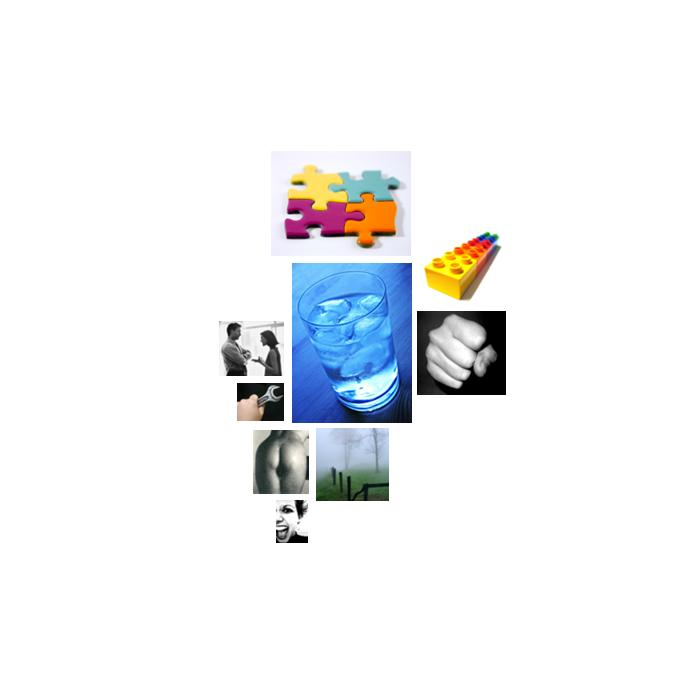

kerry-debate1.txt
  cold
cold north, north, cold, north, north, north, north, north, north, north, north, north, north, north
 abstraction
abstraction know, believe, different, believe, know, them, think, think, plan, plan, almost, them, know, plan, something, themselves, know, believe, determined, real, reason, judgment, judgment, important, figures, effectively, believe, believe, know, true, fact, something, believe, important, important, think, judgment, plan, judgment, plan, them, them, think, know, resolved, mistake, judgment, believe, think, why, thought, important, believe, sure, plants, plant, subject, may, possible, believe, know, believe, know, reason, information, almost, know, know, believe, know, mistake, mistake, believe, know, something's, learned, fact, providing, believe, thought, fact, them, plan, planning, planning, understands, them, fact, them, think, mistake, knowing, knowing, knowing, truth, truth, think, know, know, know, decided, planning, plan, know, difference, believe, important, truth, them, know, them, know, them, believe, understand, know, them, them, believe, effectively, decided, mistake, chose, understand, know, thinking, reasons, why, believe, determined, sure, choice, plan, think, choice, plan, plan, think, plan, plan, mistake, something, know, important, important, important, important, plan, think, understand, concept, them, problem, think, think, themselves, think, something, important, choice, concept, doctrine, history, understand, why, prove, reasons, them, them, know, think, possibilities, believe, think, them, purposes, real, knew, knew, think, possibly, why, something, effective, difference, think, reason, providing, them, providing, believe, reasons, why, plan, them, think, them, know, learned, think, differences, difference, think, something, certainty, certain, certain, certain, certain, certain, learn, facts, facts, them, truth, science, research, certainty, know, something, plan, research, difference, something, probably, them, think, think, important, important, true, true, something, thought, think, different, know, know, difference, believe, plan, believe, plan, believe, believe
 aggression
aggression shatters, fight, war, kill, war, war, weapons, destruction, war, kill, war, combat, war, killed, war, war, invaded, war, war, war, war, maimed, killed, weapons, destruction, cutting, cut, cut, cutting, enemy, cut, hostile, weapons, destruction, war, invading, war, threat, war, army, invading, invading, war, opposite, war, war, bother, weapons, destruction, threat, war, weapons, weapons, harshest, cut, war, war, invasion, war, war, threat, war, threat, combat, fighting, war, war, warriors, cutting, fighting, kill, break, break, fight, critical, war, war, enemy, attacked, attack, attacked, attacked, kill, fighting, enemy, attacked, enemy, enemy, war, weapons, invaded, army, weapons, weapons, war, strike, war, argued, fighting, kicked, kicked, weapons, severalfold, killing, army, fighting, threat, threat, war, war, cut, cut, weapons, weapons, weapons, weapon, weapons, destruction, weapons, weapons, weapons, opposition, critical, weapons, destruction, fight, war, weapons, threat, war, war, doubt, war, war, cutting, fight
 concreteness
concreteness further, out, over, across, out, wherever, off, where, where, off, surrounded, where, aside, center, center, where, where, where, where, where, center, close, center, places, where, out, out, over, off, back, long, over, open, here, close, here, long, long, at, out, front, over, out, here, at, over, where, where, out, corner, back, out, position, here, away, out, off, further, over, longer, back, out, out, position, position, back, here, out, out, points, wherever, over, out, out, out, long-term, back, off, places, close, flat, long-term, out, back, over, here, over, cornered, nearby, side, out, round, place, at, out, back, toward, position, where, here, middle, here, off, at, here, off, away, away, at, length, back, where, south, here, south, back, south, at, at, out, out, out, between, at, point, overextended, backdoor, place, where, out, out, overextended, across, at, position, at, back, middle, eastern, places, out, between, toward, at, out, close, along, square, back, here, at, at, here, at, at, at, out, side, out, ahead, here, at
 diffusion
diffusion mistake, mistake, mistake, mistake, mistake, mistake
 anality
anality shatters, mess
 social_behavior
social_behavior answer, thank, thank, able, able, elections, talk, confirms, say, saying, said, promised, able, say, elections, excuse, talked, approved, met, visit, tell, message, message, responders, protecting, protect, protect, able, say, said, thank, message, thank, help, said, help, said, said, information, helping, talked, talk, say, providing, offering, agreed, accept, promised, speech, said, advice, said, said, response, response, offered, said, saying, invite, offered, help, described, said, talk, says, tell, tell, talk, messages, said, allow, tell, tell, message, told, promised, described, described, talking, said, speech, said, said, tell, talks, say, say, declared, follow, said, said, talking, reminds, reminds, elections, election, tell, told, said, say, said, able, convince, say, message, message, share, able, admitted, asked, agree, said, said, said, answer, said, allowed, said, say, protect, apologize, meet, discussion, tell, said, said, respond, tell, treaties, help, treaty, offered, announced, talk, talk, messages, talks, tell, say, talking, saying, providing, providing, ask, told, committed, able, respond, tell, allow, responsibility, comments, share, comments, talk, talk, call, able, called, sale, say, message, talk, messages, telling, treaty, talks, say, response, said, talks, says, said, said, said, talks, said, thank, thank, thank, said, say, talking, talking, ask, ask, responsible, thank
 instrumental_behavior
instrumental_behavior make, make, costs, reaching, job, achieved, job, job, preparing, make, goal, use, job, build, tried, cost, used, construction, production, production, prepare, win, make, win, soldiers, succeed, succeed, succeed, make, money, effort, work, make, make, industry, job, test, spending, money, test, make, find, occupation, building, found, job, make, win, make, worked, construction, picked, trying, job, costs, used, try, build, efforts, cost, worked, worked, reach, make, uses, try, building, cost, job, soldiers, make, successful, job, soldiers, soldiers, successful, component, success, building, prepared, make, goal, logistics, win, money, job, spend, money, use, job, making, test, test, result, test, earn, earning, effort, try, test, work, working, working, preparing, job, prepared, job, business, finished, use, use, win, work, market, price, trying, job, job, money, money, money, spending, pursuing, make, pursuing, using, make, job, build, test, test, try, trying, make, working, build, make, job, win, reach, build, successful, winning, win, reaching, building, belongs, make
 anxiety
anxiety terror, terrorists, terror, terror, terror, terror, terrorists, terrorists, avoided, terrorism, troubles, terror, terrorists, terror, terrorists, terrorists, terrorist, dangerous, dangerous, dangerous, crisis, dangerous, dangerous, terrorists, terrific, worry, trouble, terrorists, terror, terror, fear
answer, thank, thank, able, able, elections, talk, confirms, say, saying, said, promised, able, say, elections, excuse, talked, approved, met, visit, tell, message, message, responders, protecting, protect, protect, able, say, said, thank, message, thank, help, said, help, said, said, information, helping, talked, talk, say, providing, offering, agreed, accept, promised, speech, said, advice, said, said, response, response, offered, said, saying, invite, offered, help, described, said, talk, says, tell, tell, talk, messages, said, allow, tell, tell, message, told, promised, described, described, talking, said, speech, said, said, tell, talks, say, say, declared, follow, said, said, talking, reminds, reminds, elections, election, tell, told, said, say, said, able, convince, say, message, message, share, able, admitted, asked, agree, said, said, said, answer, said, allowed, said, say, protect, apologize, meet, discussion, tell, said, said, respond, tell, treaties, help, treaty, offered, announced, talk, talk, messages, talks, tell, say, talking, saying, providing, providing, ask, told, committed, able, respond, tell, allow, responsibility, comments, share, comments, talk, talk, call, able, called, sale, say, message, talk, messages, telling, treaty, talks, say, response, said, talks, says, said, said, said, talks, said, thank, thank, thank, said, say, talking, talking, ask, ask, responsible, thank